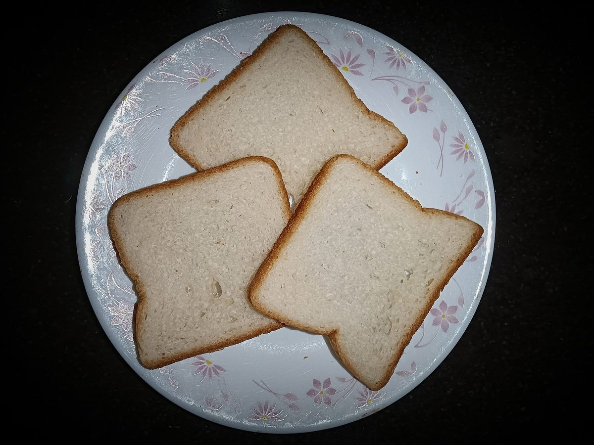
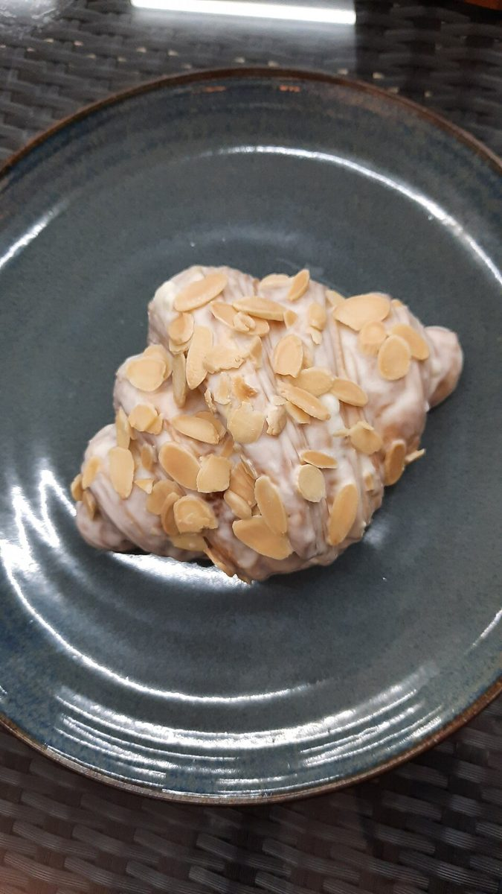
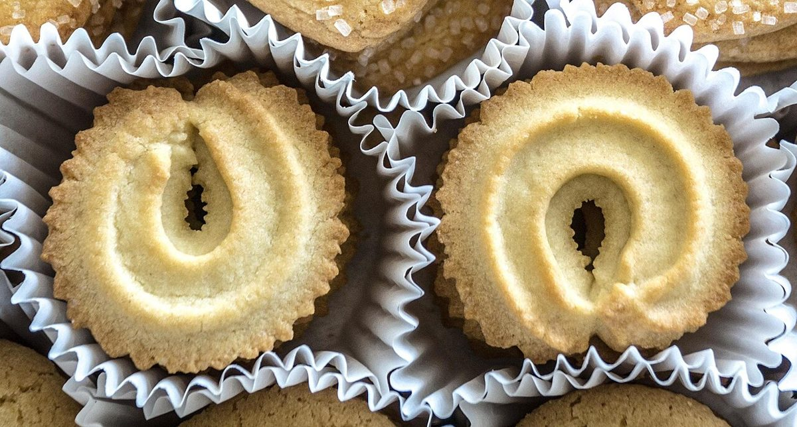

メニュー
メニューは準備中です
お店で扱っているものや価格は、確認できていないため載せていません。分かり次第ご案内します。

写真はパンのイメージです。お店のものではありません。
ギャラリー(イメージ)
パンと焼き菓子の写真





写真はパンと焼き菓子のイメージです。お店のものではなく、お店で提供している商品を示すものでもありません。
メニュー
お店で扱っているものや価格は、確認できていないため載せていません。分かり次第ご案内します。
写真はパンのイメージです。お店のものではありません。
ギャラリー(イメージ)



写真はパンと焼き菓子のイメージです。お店のものではなく、お店で提供している商品を示すものでもありません。